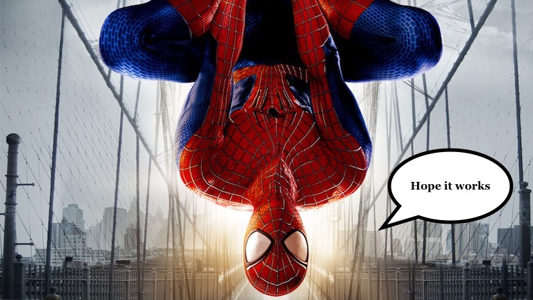
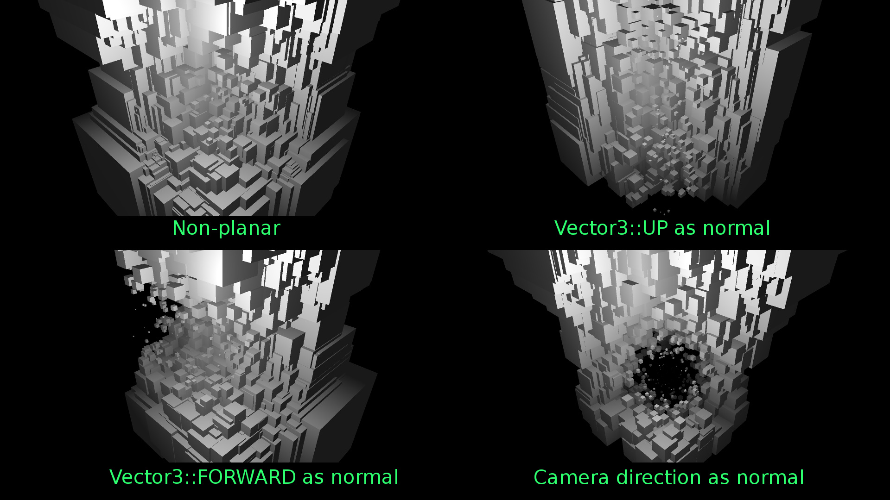

darkirk
Is there a built-in routine in Urho to detect what objects are within X radius of another one?

Is there a built-in routine in Urho to detect what objects are within X radius of another one?

Probably, triggers??

Or if You dont’t want to use physics, there is Octree::GetDrawables that can be used with a SphereOctreeQuery

Raycast < distance during update?
Object Position (vector) - Object Position (Vector) < distance during update?
Are you sure about performance of this approach?
Well, if you have no other choice…

Thanks for the help guys!


I guess both methods have their pros-n-cons. I’d expect the octree query to efficiently looks only within the specified range while ignoring the rest of the world and returning visually accurate results.
Whereas when simply checking the distance between nodes you could start with applying a filter through calling
GetChildrenWithTag
,
GetChildrenWithComponent
and
GetDerivedComponents
on the
Scene
with
recursive
set to
true
. Once you get the node’s position checking distances is in essence a simple pythagorean problem.
In many cases triggers could also do the trick.
Note that this is comparing a
Vector3
and
float
.
I implemented the function as such:
float LucKey::Distance(const Vector3 from, const Vector3 to, bool planar)
{
if (!planar)
return (to - from).Length();
else
return ((to - from) * Vector3(1.0f, 0.0f, 1.0f)).Length();
}
With
planar
having
false
as its default value.
What if I’m spiderman and I’m walking on the side of a skyscraper?

Then the distance to the skyscraper would be zero.

float LucKey::Distance(const Vector3 from, const Vector3 to, Vector3 complanarity = Vector3(1,1,1))
{
return ((to - from) * complanarity).Length();
}
spiderman is served
How about:
float Distance(Vector3 from, Vector3 to, const bool planar = false, Vector3 normal = Vector3::UP);
float LucKey::Distance(Vector3 from, Vector3 to, const bool planar, Vector3 normal)
{
Vector3 difference{ to - from };
if (planar) {
difference -= difference.ProjectOntoAxis(normal) * normal.Normalized();
}
return difference.Length();
}
Should work for any plane. Not just axial planes.

Seems to work.

The size of the boxes in the images relies on:
LucKey::Distance(boxPos, Vector3::ZERO, ..., ...)
Here’s a video:
Spiderman may like this
DistanceToPlane
function as well:
float DistanceToPlane(Vector3 from, Vector3 normal = Vector3::UP, Vector3 origin = Vector3::ZERO);
float LucKey::DistanceToPlane(Vector3 from, Vector3 normal, Vector3 origin)
{
return Abs((from - origin).ProjectOntoAxis(normal));
}
Yeah. Could do for another dynamic geometry example… or better swipe plane raycast… or so…

Aw, seen that word again and want to ask for a meaning…
What is swipe?
What is swipe plane raycast?